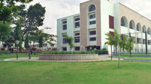

FACILITIES
HOSTEL FACILITIES
Sir Syed Ahmed Boys Hostel
Phone : 080 – 7271009
Capacity : 250 students
This Hostel accommodation is exclusively for Ist Year students of all branches
Moulana Azad Boys Hostel
Phone : 080 – 7273475,
Capacity : 250 students
This Hostel accommodation is exclusively for II Year students of all branches
Tippu Sultan Boys Hostel
Phone : 080 – 7271664,
Capacity : 300 students
This Hostel accommodation is exclusively for III & IV Year students of all branches and Single room accommodation is also available for meritorious students.
Hazrath Bi Bi Fathima Girls Hostel
Capacity : 120 students
This Hostel accommodation is exclusively for Girls students of all branches
CENTRAL FACILITIES
The College is on the threshold of entering its silver jubilee year of existence. It is recognised as a good engineering college for its good academic ambience, aesthetic value and sprawling lawns. The college tends to strike a balance between modernisation as well as the old heritage. Care has been taken to invest on buildings and extensively on equipment for every department. Removal of obsolescence and modernisation of laboratories has been given the prime importance. Each department has been given adequate accommodation, lecture halls, faculty rooms, laboratories, workshops etc. Efforts are underway to provide a well-equipped seminar hall for each department. Electric generator units are available to ensure 24-hour power supply. The hostels are also provided with generator backup.
Large and well-maintained playing grounds and courts for cricket, tennis, football, volleyball, basketball etc., conforming to international standards have been provided. Indoor auditorium and an amphi theatre for small and large gatherings and an high-tech seminar hall are available for conducting meetings, symposia, workshops, celebrations etc. Hostel blocks are well designed with architectural appeal to provide comfortable stay to the boarders.
Altogether our College campus is located at a scenic spot surrounded by beautiful hillocks, overlooking vast green lands and hills conducive for studies. Its rural location away from Bangalore city has ensured a pollution free atmosphere. Our College campus resembles a mini India with students from all parts of the country..

Prayer Hall Front View
Dr. Mumtaz Ahmed Khan Building
Haji Nabi Shariff Block
Seminar Hall

Transportation

ATM & Post Office
LIBRARY
The college has a well stacked library housed in a separate building with a total area of about 737.50 Sq.m with separate halls for issuing Section and Reference section. In addition to the Main library, there are separate departmental libraries in all Engineering departments. At present the library has 48,572 Volumes on its shelves costing over Rs.92.3 Lakhs The library has Subscribed to online e-resources (e Journals packages) through VTU Consortium from different publishers listed below.
1.IEEE, IEL Online.
2.ASME (American Society of Mechanical Engineering)
3.Springer e-Journals & e-books
4.ASCE ( American Society of Civil Engineer)
5.Taylor and Francis
6.ProQuest Engineering
7.Knimbus Digital library
8.Knimbus Remote Access
9.Kopykitab e-Books
10.Sententia- An Assistive tool for formal writing
Besides this 56 National Journals 18 news papers and 23 Basic Science and General Magazines are also subscribed.
In addition to the prescribed text books and reference books, the library has several Volumes of Encyclopedias, Hand books, technical & General Dictionaries, Project Reports, Proceedings of national & International conferences, journals, Books for Competitive examinations like KAS, IAS, GRE, GATE, TOEFEL & latest books on Basic Sciences.
The Library has been fully computerized with Easylib advanced multi-user Software, all the modules have been automated including OPAC facility. Further OPAC Facility has been extended to all the respective departments through Wi-Fi network which will provide online accesses to entire library collection. The library has 22 number Computer systems networked for library automation
SPECIAL FACILITIES & SERVICES OFFERED1.Students can borrow 05 books at a time & can retain the books for a period of 15 days, the books have to be returned / renewed before the due date.
2.Teaching faculty can borrow 08 books at a time
3.The College library has a special SC/ST book bank facility exclusively for the use of SC/ST students. They can borrow 02 books and they can retain the books till the end of the semester. This is in addition to the regular 05 books
4.The college library has a Photocopying Machine to cater the needs of the staff & students at nominal rate
5.The college library is having the SWAYAM NPTEL Local Chapter for accessing the of NPTEL Web Course 125+ 136 Video courses, the library has acquired all the NPTEL Video Courses in 02 External Hard disk.
6.The library is arranging live transmission of VTU e-Shikshana Lecture programmes for the benefit of students and staff through satellite Communication.
7.The College library is an Institutional member of DELNET. It offers access to more than a million of bibliographic records through internet and facility to borrow books on Interlibrary loan (ILL) and Journal articles.
8.The college library has Institutional Member of Nation Digital Library.